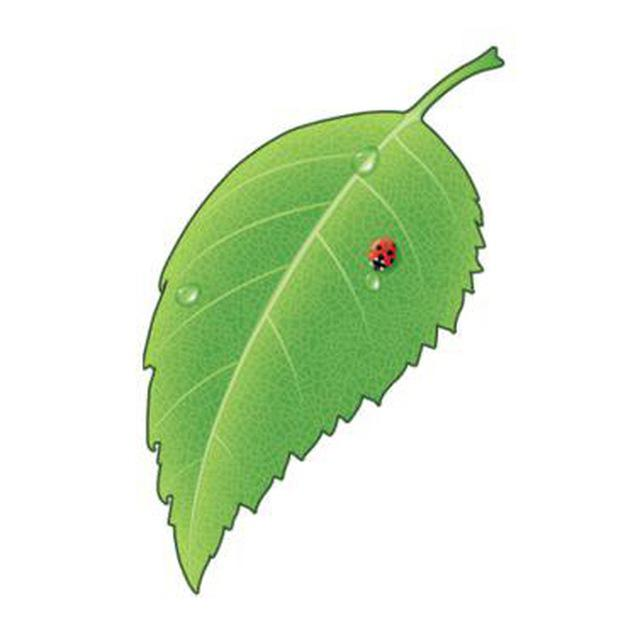

 «Наруто» (яп. NARUTO - ナルト -) — манга Масаси Кисимото в жанре сёнэн. Главным её героем является Наруто Удзумаки, шумный и непоседливый ниндзя-подросток, который мечтает достичь всеобщего признания и стать Хокагэ — главой своего селения и сильнейшим ниндзя. Чтобы добиться уважения окружающих, ему предстоит пройти через тысячи препятствий: экзамены ниндзя, различные миссии и сражения.
Манга выпускалась с 21 сентября 1999 года по 10 ноября 2014 года японским издательством Shueisha в журнале Weekly Shonen Jump. Объединена в 72 танкобона.